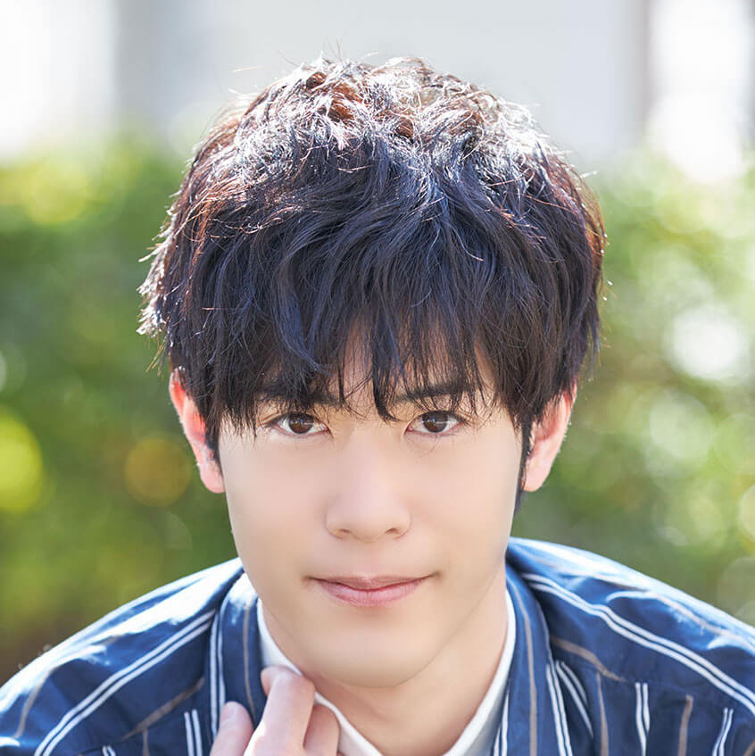

【声マガ・インタビュー】大塚 剛央
TOPICS
PROFILE
アイムエンタープライズに所属する大塚 剛央さんは、東京都出身の10月19日生まれ。『詩季織々』（リモ役）、『風が強く吹いている』（蔵原走役）、『Dimensionハイスクール』（緑ヶ丘流星役）等に出演。2019年4月放送の『なむあみだ仏っ！‐蓮台UTENA‐』ではマーラ役で出演。
地元のサッカークラブに入ったことをきっかけに、小・中・高とサッカーに明け暮れてきた大塚さん。ちなみに高校時代はミッドフィルダー、あるいはフォワードという得点に絡む重要なポジションだったとのこと。そんな大塚剛央さんに、声優をめざしたきっかけと日本ナレーション演技研究所（以下、日ナレ）で学んだことや、今後の目標についてお話していただきました。
就職はせずに声優の道へ
声優という仕事を意識したのはいつ頃ですか？
元々母がゲーム好きで、その影響もあり、小学生の頃から意識はしていませんでしたが、声優というお仕事には触れていたのだと思います。本格的に意識し始めたのは高校生の頃で、深夜アニメをよく観るようになったのがきっかけです。キャラクターの声を好きになったら、演じている声優の方のお名前を調べたりしていました。
では、声優をめざしたきっかけを教えてください。
大学4年の時に就職活動をしていたのですが、進路についてどうしても納得がいかず悩んでいました。「本当にやりたいことはこれじゃない、違うんじゃないか」って。そんな時、自分が今まで夢中になっていたことについて考えを巡らせてみたんです。それがゲームやアニメでした。そして、その流れで声優という職業が浮かびあがってきました。すると、今まで抱えていたモヤモヤした気持ちが晴れて、自分の将来像が見えてきたんです。それからは「これしかない！」と思うようになって、迷いはなくなりました。
ご両親の反応はいかがでしたか？
「バカじゃないか」と言われました（笑）。自分でも多少不安はありましたが、大学の教授に相談にのってもらったりしながら真剣に考え抜いた末の決断でしたので、誰かに反対されてもその時点では諦める気持ちはありませんでした。
周囲の友人はなんと言っていましたか？
ほとんどの友人にはアニメが好きだったことを話していなかったので、進路についての悩みも大学の教授以外の誰かに打ち明けることはなかったですね。
それなら現在の大塚さんの活躍には、皆さんとても驚いているんじゃないですか？
そうですね。友人たちは一様に「あの大塚がまさか声優になるなんて！」という反応をしていますね（笑）。
日ナレを選んだ理由について教えてください。
所内オーディションがあること、出身者に知っている声優さんがいらっしゃること、そして自分で受講料を支払うと決めていたので、金銭的な面での通いやすさなど、すべてを考慮したうえで選んだのが日ナレでした。入所案内をしっかり読み込んでから決めましたから、スッキリした気持ちで通うことができました。
実際に入所してみていかがでしたか。
大学の時に夏期講習で演劇論に触れた程度でしたから、お芝居に本格的に触れたのは初めてといっていいと思います。なので、初めのうちは腹式呼吸ひとつとってもどのようにやるのかよくわかりませんでしたし、かつ舌も自分の思うようには口が動きませんでした。正直もっと自分はやれるんじゃないかと思っていたのですが、実際にやってみたらどれも想像以上に大変でした。また、基礎科の講師の方はなかなか褒めてくださらない方で、自分なりに考えてきた演技をいろいろ試してみるのですが、なかなか認めてもらえず、最初の1年間は悔しい思いばかりでした。ですが、これが自分にとってはかえって良かったと思っています。
というのは？
演技経験1年目の僕が褒められても、それはそれでおかしいと思っていました。また、その指摘が自分でも内心ダメだと思っているものばかりでしたので、納得していました。入所当時の僕はとにかく声優になるんだ、という気持ちが強くて、すべてにガムシャラだったので、講師の方の叱咤も活力になっていたんだと思います。
疲労度が高かった分、濃密だった本科の1年間
大塚さんはお茶の水校に通っていたそうですね。同じクラスの方々から刺激を受けたことはありますか？
基礎科の時に自分がライバルだと勝手に思っていたクラスメイトの男性がいたんです。彼は講師の方から一目置かれているのが誰からもわかる、そんな存在でした。年齢も比較的近かったので、彼には負けたくないと思いながら受講していました。実際に彼のお芝居は面白くて、とても勉強になりました。
入所した頃の一週間の生活サイクルを教えていただけますか？
レッスンのある日だけは、終日演技の勉強をすると決めて、残りの6日間は朝から晩までアルバイトをしていました。当時の僕は幸いなことに実家暮らしだったので、その分、経済的なことに神経を削られることなく、精神的に余裕のある状態でお芝居の勉強に没頭することができました。
本科では、演技とボーカルの両方を学ぶ週2回クラスに通われていたんですよね。歌うことに興味があったのですか？
歌うことは元々好きではあったのですが、それよりも自分の体づくりに触れる時間を増やしたいという気持ちが強かったです。楽器としての体の使い方を知りたかった、というのが大きな理由です。
実際にレッスンを受けてみていかがでしたか？
ボーカルレッスンで教わったことを演技レッスンに、演技レッスンで教わったことをボーカルレッスンに活かすことができて相互に良い影響があったと思います。また演技と歌という異なる表現方法であっても、結局のところ、どちらも根本の部分には共通するものがあるのだと気づけたのは大きかったです。
本科では舞台形式のレッスンが中心だったと思うのですが、いかがでしたか？
講師の方が選ばれる題材は、登場人物が強烈な個性を持っていて、舞台の上で大騒ぎをするような熱量のある作品が多かったのですが、僕はあまり話す方ではないものですから、気持ちを前に前に持っていくお芝居をするのは大変でした。
それは高いテンションを常に維持しなくてはならないということですか？
単にテンションを上げるのとはちょっと違うんです。舞台上の登場人物のテンションが上がっているのには、そうなるだけの明確な理由があります。その理由をしっかり脚本から読み解いたうえで、強い気持ちで演じなくてはいけないのですが、僕にとっては難しい課題でした。
読解力とアプローチが試されているのですね。
はい。題材も難しいものが多かったのですが、見方を変えれば個々人の解釈の余地があるので、みんな、自分でじっくり考えたうえで、自由に演じていました。そして僕もそんなクラスメイトの姿を見て刺激を受けました。本科の1年は肉体的にも精神的にも疲労度の高い1年でしたが、その分、学ぶことがとても多い濃密な1年でした。
研修科のレッスンで印象に残っていることはありますか？
研修科の時は、すでに声優の仕事をしながら通っていたのですが、外画の吹き替えのレッスンでは、いろいろなアプローチを試すことができたので、オーディションや収録現場でとても役立ちました。また講師の方が良いところを伸ばしてくださる方で、僕が比較的、年齢の高いキャラクターを演じた際に褒めてくださり、自分でも気づいていなかった可能性を見いだしてくださいました。
講師の方々の演技へのアプローチがそれぞれ違ったようですが、戸惑いはありませんでしたか？
それはありませんでした。言い方が皆さん違うだけで、「芝居とは何か」という点において、根本の部分は共通していました。特に演じるにあたって大切にされていることは、皆さん一緒でしたので、戸惑うこともありませんでした。
日ナレに通うなかで、成長を実感できた瞬間や出来事があったら教えていただけますか？
基礎科の時の話なのですが、レッスン中に「バチっとハマったな！」と感じられる体験をしました。その時は、今まで学んできたことを、やろうと意識しなくても自然とできるようになっていたんです。講師の方からも「今のそれだよ！」とおっしゃっていただけました。季節は冬だったと思うので、4月に入所してからガムシャラにやってきたことが、ようやくこの時、成長につながったと実感できました。
事務所に所属したのはいつですか？
基礎科1年目の所内オーディションでアイムエンタープライズに合格しました。ですから2年目以降の本科と研修科のレッスンで学んだことを、現場で活かすことができました。
所属が決まった時のお気持ちを教えていただけますか？
自分に何か光るものがあるから選んでいただけたのだと思っているので、そこは素直に自信を持っていいのかな、と思うのですが、この時点では声優としてのお芝居の仕方がわかっていませんでした。現に自分なりにプランを準備して現場に入っても、通用しないことばかりでした。自分では意識していなかったのですが、セリフのスピードが速すぎて言葉になっていないと、音響監督さんに指摘されることがありました。その時に体を使って演技することとマイク前で演技することの違いを改めて痛感しました。
一つひとつの過去の積み重ねが今の自分を作っている
デビュー作を教えてください。
アニメ作品で初めて名前のある役柄をいただいたのは、日中合同で制作されたアニメ映画『詩季織々』のリモ役です。マネージャーさんから連絡をいただいた時にはオーディションからかなり時間が経っていました。最初はピンとこなかったのですがジワジワと実感が湧いてきて、気づいたら「やった！」と声を上げて喜んでいました。周囲にたまたま誰もいなくて良かったです（笑）。この時は本当に嬉しかったですね。
現場の雰囲気はいかがでしたか？
現場の雰囲気はとてもほのぼのとしていて、最初は緊張していたのですが、周囲の方々に話しかけてもらって、とてもリラックスすることができました。
ところで、大塚さんはご自身とかけ離れたキャラクターを演じる際は、どのような役作りをしていますか？
自分の中にないものをどうやって出したらいいのかは僕自身、常に悩んでいます。僕の場合、とりあえず他の役者さんや声優さんを真似るところから始めています。また今まで観てきたアニメや映画やゲームの中に似たキャラクターがいれば、その記憶を引き出して演じてみます。そのうえで自分ならどのように考えて行動するか、自分の中にある引き出しを開けながらキャラクターを作りあげていきます。ですが本当にお芝居が成立するのは、観てくださった方や周囲の方が「良かった」とおっしゃっていただけた、その時だと思っています。そして自分が作ってきたものが間違っていなかったんだと思える瞬間でもあります。
そういう意味では、テレビアニメ『風が強く吹いている』の寡黙なイメージの蔵原走は、大塚さんにとって比較的、演じやすいキャラクターのように思うのですが？
走も僕も確かに多くを語らないタイプで、自分とかけ離れていない分、演じやすくはあります。ですが彼が寡黙なのには僕とはまた違う理由があります。全く一緒というわけでもないんです。だからそこは演じる際に気をつけています。実は、この作品の現場で共演者の方のお芝居に影響を受け、自分の演技を変えてみたことがあるんです。ですがその時に音響監督さんから「走は純粋に素直な思いから言葉を発しているので、周囲にあまり引っ張られない方が良い」と指示をいただきました。それからは全体のバランスよりも、走らしさを前に出すお芝居に専念するようになりました。
大塚さんの考える声優という仕事の魅力を教えてください。
普通に生きていたら関わることのない人物やモノになることができるところです（笑）。でもそのためには、自分自身が声優として様々な役柄に対応できるところを見せないといけない。常に自分自身との戦いだと思っています。
どのような声優になりたいか教えてください。
いつまでも求められる声優でありたいですね。マンガや小説を読んでいる方に「このキャラクターなら大塚剛央だよね」とおっしゃっていただける、そんな声優でありたいと思っています。現在は声のお仕事だけでなく、歌やお芝居などさまざまな表現が声優に求められるようになっています。僕もどんどん新しいことに挑戦していきたいし、これから、もっともっと自分の世界を広げていきたいですね。
最後に声優をめざしている方にメッセージをお願いします。
自分が今、こうしてお仕事をいただけているのは、これまでの積み重ねがあったからだと思っています。今までの一つひとつの選択と行動が現在の僕をつくっていると思うので、今はあまり余計なことを考えずにひたすら前進したいと思っています。皆さんも自分の中でどうなりたいのかを明確にして、一番やってみたいことをしっかり持ってさえいれば、頑張れると思います。そしてそんな思いを大切にして欲しいですね。
プロフィール
大塚 剛央
- 所属事務所
- アイムエンタープライズ
主な出演歴
- 風が強く吹いている（蔵原走）
- Dimensionハイスクール（緑ヶ丘流星）
- なむあみだ仏っ！-蓮台 UTENA-（マーラ）



{kind=link}
{kind=link}
{kind=link}
{kind=link}
{kind=link}
{kind=link}